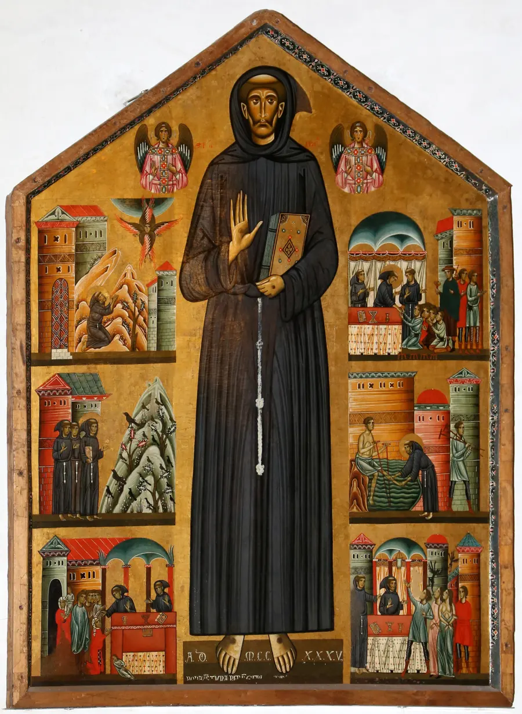
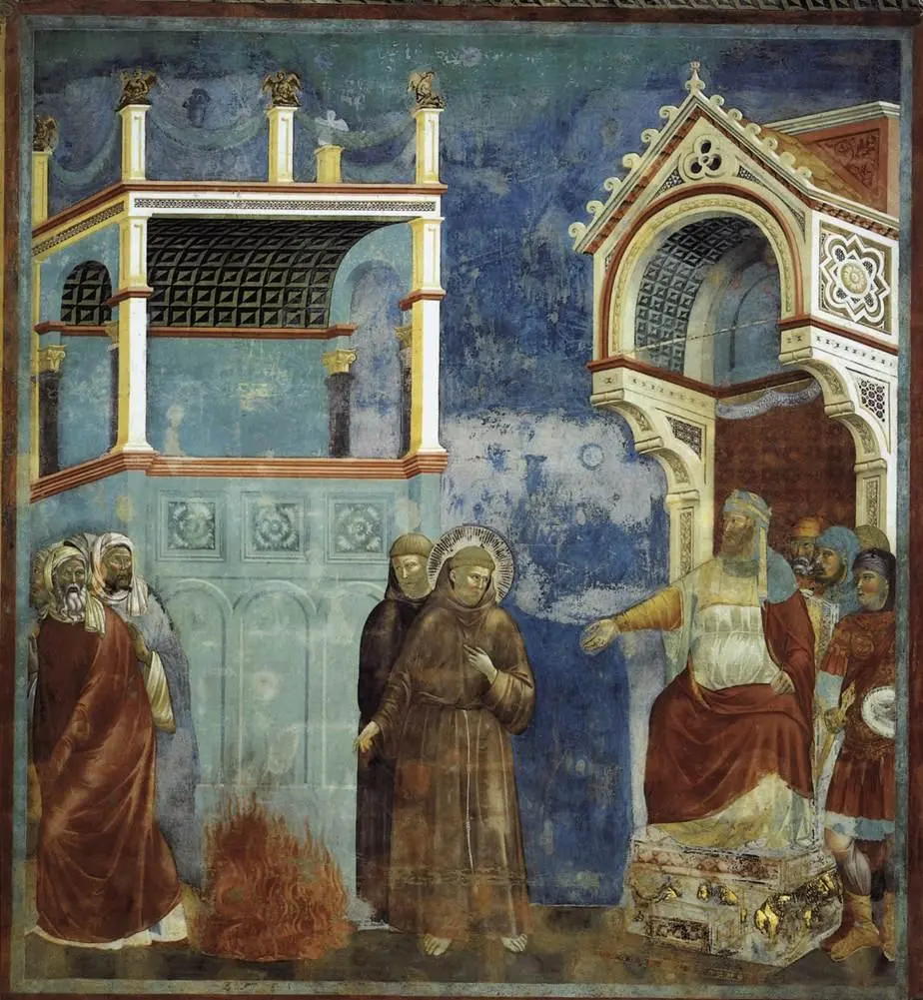

Fr. Casey Cole, a Franciscan friar, on who the real Francis was behind the birdbath statue (about 11 minutes). Watch on YouTube.
St. Francis of Assisi
A cloth merchant's son who wanted to be a knight and ended up the poor man of Assisi - il Poverello. He kissed a leper, heard Christ speak from the San Damiano cross, rebuilt the Church in poverty, walked into the Sultan's camp to talk rather than fight, received the stigmata on a mountain, and near the end, almost blind, sang the Canticle of the Creatures. He is the most imitated saint in Christian history, and this page is his story, his teaching in his own words, and where to watch his life told well.

At a Glance
Who: Giovanni di Pietro di Bernardone (1181/1182-1226), called Francesco - founder of the Friars Minor, and with Saint Clare the founder of the Poor Clares.
Known for: radical Gospel poverty lived with joy; the first recorded stigmata; the Canticle of the Creatures; the first Christmas crib; a dialogue with a Sultan in the middle of a crusade; and an order that rebuilt the medieval Church from within.
Status: canonized in 1228 by Pope Gregory IX - the same Cardinal Ugolino who had protected his order in his lifetime - just two years after his death. His feast is October 4. He is patron of Italy and, since Pope John Paul II named him so in 1979, patron of ecology.
The honest fine print: Francis wrote little, and many famous sayings float around under his name. This page quotes only what comes from his own writings or from sources close to his life - and flags the beloved Peace Prayer, which is not actually his.
His Life (1181/1182-1226)
He was born in Assisi at the end of 1181 or the beginning of 1182, the son of a rich cloth merchant, and spent his youth chasing the chivalric ideals of the age - fine clothes, songs, dreams of knighthood. At twenty he marched off to war against Perugia, was taken prisoner, and came home sick and changed. The conversion came slowly: a kiss given to a leper he met on the road, and then, in the half-ruined church of San Damiano, a voice from the crucifix - "Go, Francis, and repair my Church in ruins." He began by repairing the little building with his hands; the call ran far deeper, to the Church herself.
When his father dragged him before the bishop to demand repayment, Francis stripped off his clothes and returned them - renouncing his inheritance on the spot, keeping nothing but the life God gave him. In 1208, hearing the Gospel of Jesus sending out his apostles with nothing, he found his form of life: poverty, preaching, joy. Companions joined him, and in 1209 he walked to Rome, where Pope Innocent III - who had dreamed of a small, insignificant brother holding up the collapsing Lateran basilica - recognized him and gave his movement a fatherly approval. The friars settled at the Portiuncula, the little church of Santa Maria degli Angeli. In 1212 a noblewoman of Assisi, Clare, followed his way, beginning the Poor Clares.
In 1219, in the middle of the Crusades, Francis crossed the lines at Damietta to meet the Muslim Sultan Malik al-Kamil - armed, as Benedict XVI put it, only with his faith and his personal humility - and was received cordially. It remains a model of dialogue in an age of conflict. In 1223 he staged the first Christmas crib at Greccio, so people could see the poverty of Bethlehem with their own eyes. In 1224, praying at the hermitage of La Verna, he saw a vision of the Crucified Lord in the form of a seraph and received the stigmata - the wounds of Christ in his own body. The next year, sick and nearly blind, he composed the Canticle of the Creatures, praising God through Brother Sun and Sister Moon. He died on the evening of October 3, 1226, lying on the bare earth of the Portiuncula, having blessed his brothers. Two years later Pope Gregory IX entered him in the roll of saints, and a great basilica rose over his tomb in Assisi.
Il Poverello - the Poor Man Who Rebuilt a Church
Francis never set out to found an order; he set out to live the Gospel "without gloss" - as it is, in all its radicality. What he built grew around that: friars with nothing, preaching repentance and peace, owning not even the roofs over their heads. Within a decade the movement had spread across Europe and to Morocco, and his spiritual sons went on to guard the Christian holy places - the Franciscan Custody of the Holy Land still serves them today.
His genius was to make holiness look like joy. He called every creature brother and sister - sun, moon, wind, water, fire, even Sister Death - not as poetry about nature but as family life with God the Father of all. Eight centuries later the Church still reaches for his voice: Pope Francis took the title of his encyclical on care for creation, Laudato Si', from the first words of Francis's Canticle.

His Teaching, in His Own Words
"Most High, all-powerful, good Lord, yours are the praises, the glory, the honor, and every blessing." The opening of the Canticle of the Creatures, composed in 1225 when he was sick and nearly blind. It runs through Brother Sun, Sister Moon, Brother Wind, Sister Water, Brother Fire, and Sister Mother Earth - and ends by praising God through "our Sister Bodily Death," which no living person can escape. Happy, he wrote, are those she finds doing God's will.
"Blessed Virgin Mary, no one like you among women has ever been born in the world, daughter and handmaid of the Most High King and heavenly Father, Mother of our Most Blessed Lord Jesus Christ, spouse of the Holy Spirit. Pray for us... to your most blessed and beloved Son." From his own writings - Benedict XVI closed his audience on Francis with these words, calling them the Poverello's own.
"Go, Francis, and repair my Church in ruins." Not Francis's words but the words he heard from the San Damiano crucifix - the sentence his whole life answered. He thought it meant a falling-down chapel; it meant the Church, and he repaired her not in opposition to the pope but in communion with him.
An honest note on the Peace Prayer. "Lord, make me an instrument of your peace" is the prayer most often put in Francis's mouth - and it is not his. It first appeared in print in a small French magazine in 1912 and was attached to his name decades later. It is a beautiful prayer and worthy of him, but the honest credit is: anonymous, twentieth century. What Francis actually wrote is above - and it is better.
Watch: St. Francis of Assisi
Video hosted on YouTube by Breaking In The Habit (a Franciscan friar's own channel) and the Franciscan Friars. Each embed uses youtube-nocookie.com - no YouTube cookies are set unless you press play - and each video was verified playable before embedding.
A feast-day homily from the Franciscan Friars on finding Francis in our own century (about 19 minutes). Watch on YouTube.
The companion piece on what Francis actually said - versus the internet's version (about 7 minutes). Watch on YouTube.
These videos are hosted by their channels and were not produced by this site.
Frequently Asked Questions
Did Francis write the Peace Prayer ("make me an instrument of your peace")?
No - and this page says so plainly in the quotes section. The prayer first appeared in print in 1912 in France and was only later attributed to him. It is a lovely prayer, but it is not from his pen. His authentic prayer is the Canticle of the Creatures.
Did he really receive the stigmata?
Yes - his is the first recorded case in Christian history. In 1224, at the mountain hermitage of La Verna, he had a vision of the Crucified Lord in the form of a seraph and bore the wounds of Christ in his hands, feet, and side for the last two years of his life. It was documented by his own brothers and confirmed at his death.
Did he really meet the Sultan?
Yes - in 1219, during the Fifth Crusade, he crossed the battle lines at Damietta in Egypt and was received by Sultan Malik al-Kamil. The two spoke cordially for days. Benedict XVI held the meeting up as a model for Christian-Muslim dialogue: Francis went armed only with faith and humility.
Why is he the patron of ecology?
Pope John Paul II named him patron of ecology in 1979 because of the Canticle - Francis's way of calling sun, moon, wind, water, fire, earth, and even death his brothers and sisters. Pope Francis drew on the same song for his 2015 encyclical on creation, Laudato Si', whose title comes from the Canticle's first words.
Did he found three orders?
Effectively, yes: the Friars Minor (1209), the Poor Clares with Saint Clare (1212), and a third order for laypeople living his Gospel way in the world - today's Secular Franciscans. He also never intended any of it at the start; he simply set out to live the Gospel as it is.
Sources
- Benedict XVI, general audience on Saint Francis of Assisi (January 27, 2010) - the life: the merchant's son, San Damiano, the renunciation, Innocent III, the Sultan, the stigmata at La Verna, the death at the Portiuncula in 1226, the canonization by Gregory IX
- The Canticle of the Creatures (1225) - Francis's own song, quoted here from his writings
- Pope Francis, Admirabile Signum (2019) - the apostolic letter on the nativity scene, which retells the first crib at Greccio in 1223
- Pope Francis, Laudato Si' (2015) - the encyclical that takes its title from the Canticle